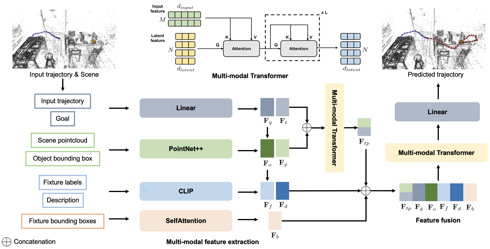
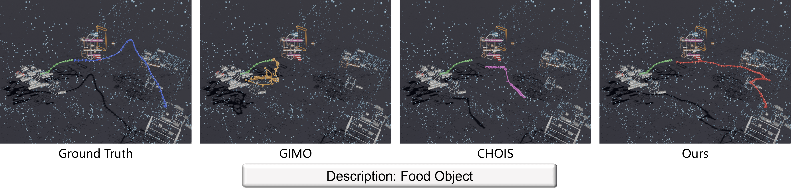
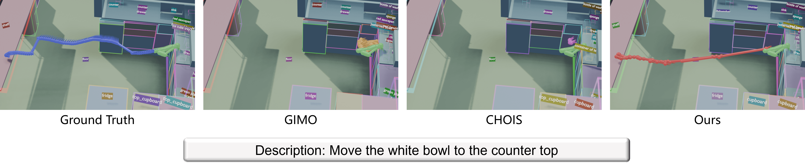
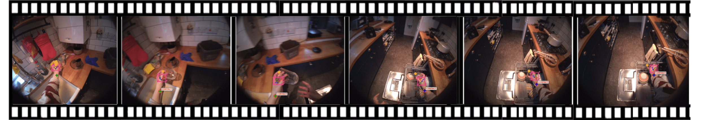
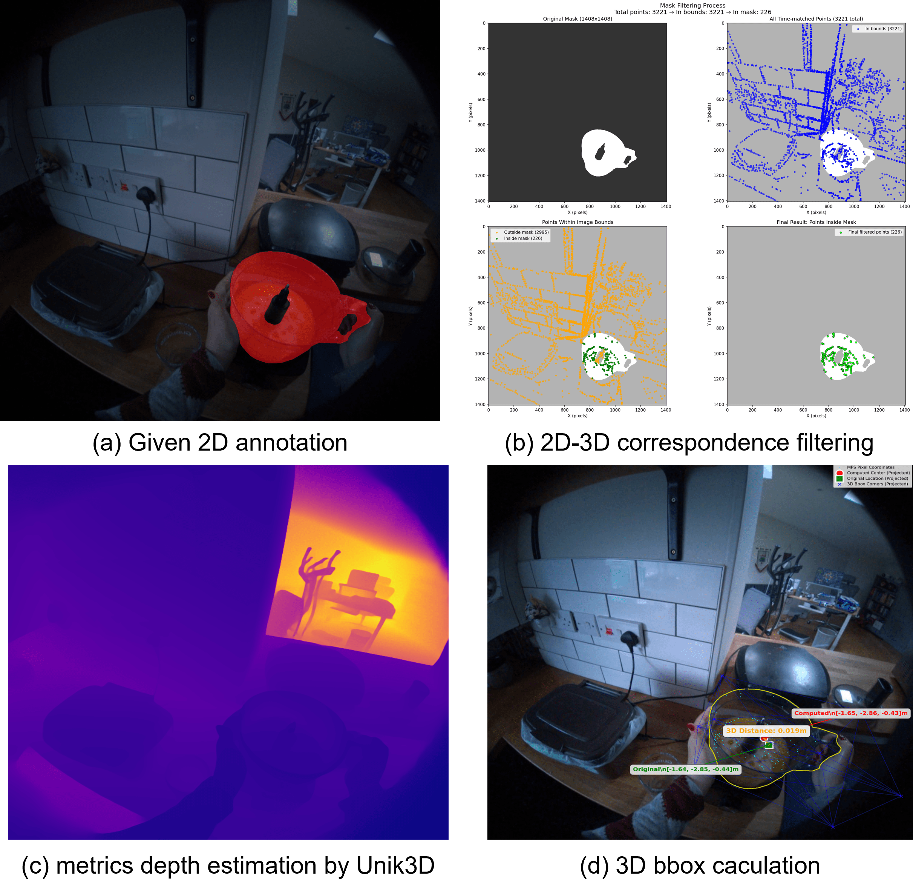
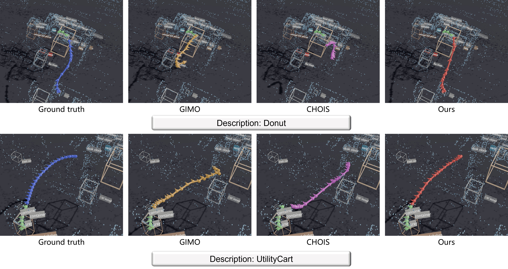
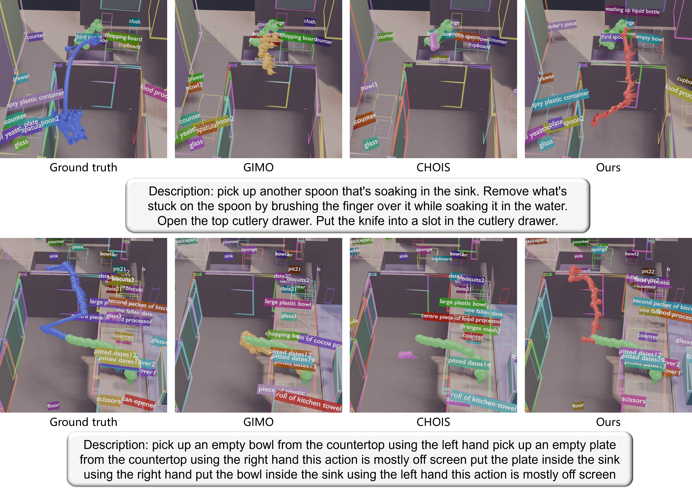

Visual-language grounding aims to establish semantic correspondences between natural language and visual entities, enabling models to accurately identify and localize target objects based on textual instructions. Existing VLG approaches focus on coarse-grained, object-level localization, while traditional robotic grasping methods rely predominantly on geometric cues and lack language guidance, which limits their applicability in language-driven manipulation scenarios. To address these limitations, we propose the RealVLG framework, which integrates the RealVLG-11B dataset and the RealVLG-R1 model to unify real-world visual-language grounding and grasping tasks. RealVLG-11B dataset provides multi-granularity annotations including bounding boxes, segmentation masks, grasp poses, contact points, and human-verified fine-grained language descriptions, covering approximately 165,000 images, over 800 object instances, 1.3 million segmentation, detection, and language annotations, and roughly 11 billion grasping examples. Building on this dataset, RealVLG-R1 employs Reinforcement Fine-tuning on pretrained large-scale vision-language models to predict bounding boxes, segmentation masks, grasp poses, and contact points in a unified manner given natural language instructions. Experimental results demonstrate that RealVLG supports zero-shot perception and manipulation in real-world unseen environments, establishing a unified semantic-visual multimodal benchmark that provides a comprehensive data and evaluation platform for language-driven robotic perception and grasping policy learning.

Given an observed trajectory and scene context, our model predicts future 6-DOF object trajectories conditioned on a specified goal state. The pipeline consists of:

The green trajectory represents the input history across all experiments. Only our model produces trajectories that both reach the target and avoid collisions, while also achieving shorter path lengths compared to the ground-truth natural trajectories.

The green points indicate the input history. Our model generates trajectories that are more efficient than the ground truth, while all baselines remain stuck in repetitive motions.

HD-EPIC only annotates object positions at pickup and drop events. We use the interacting hand as a proxy for the object's motion: by tracking the hand via Project Aria's MPS and detecting hand-object contact with a pretrained Hands23 detector, we infer dense 6-DOF object trajectories between pickup and release.

HD-EPIC lacks 3D bounding box annotations for scene objects. We recover them automatically: given a 2D annotation mask, we filter 3D point correspondences using depth estimates from Unik3D and back-project them into 3D space, then fit a 3D bounding box to the filtered point cloud.


@inproceedings{zeng2026gmt,
title = {{GMT}: Goal-Conditioned Multimodal Transformer for 6-DOF Object Trajectory Synthesis in 3D Scenes},
author = {Zeng, Huajian and Saroha, Abhishek and Cremers, Daniel and Wang, Xi},
booktitle = {International Conference on 3D Vision (3DV)},
year = {2026},
}